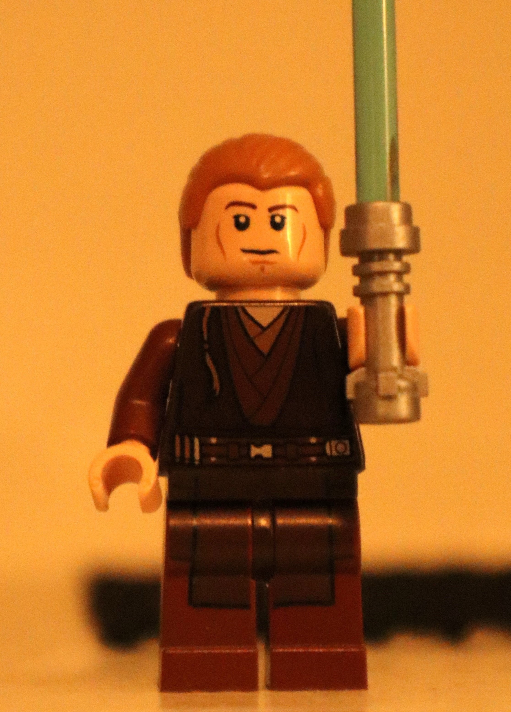
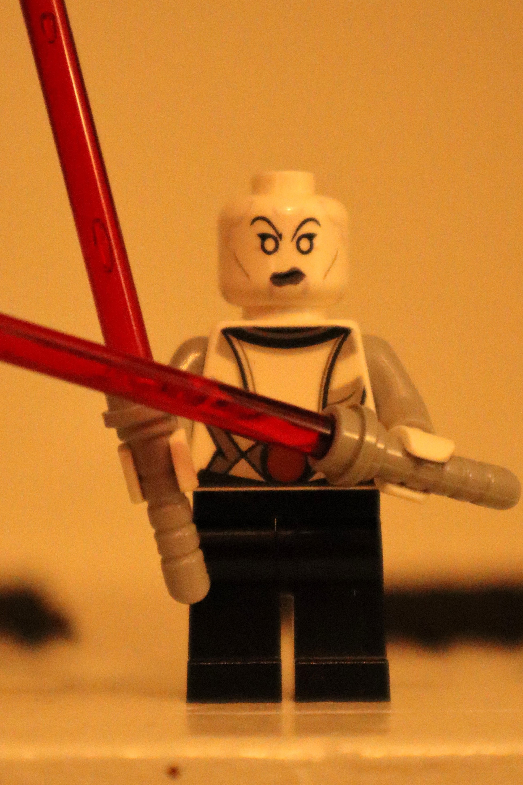
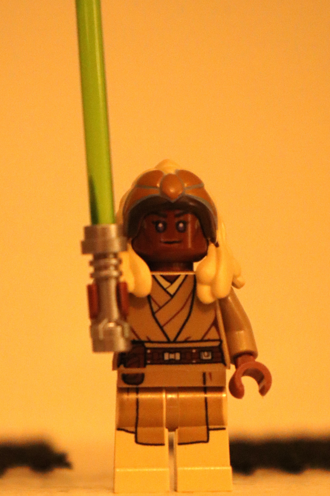
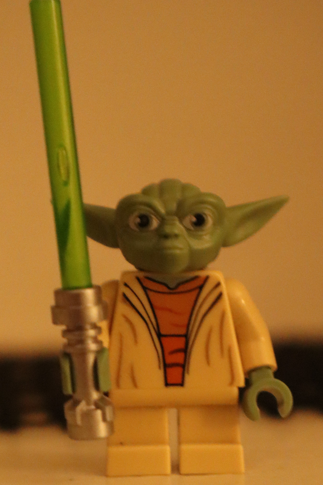

Levi's Lego Emporium
|Minifigures|
Levi's Lego Emporium
|Minifigures|
Explore exclusive minifigures!

The battle droids used by the Seperatist Army ranged in wide variety. Some were specialized units while others were mass produced infantry. The Seperatist army used droids to overwhelm their enemies by sheer numbers.

The Republic clonetroopers served all throughout the Clone Wars and a few years after. They are the main infantry force on the battlefield. They operate all vehicles in the Republic army.

The Jedi of the Republic were the leading charge of the clone trooper force. They were given commanding ranks of General or Commander in the army. These strong warriors helped destroy the Seperatist droids.
| Droid Gunship |
Anakins Custom Fighter |
Homing Spider Droid |
Clone Scout Walker 501st |
|
|---|---|---|---|---|
| Droids |   |
 |
Includes 2 |
 |
| Force Users | Not Included |   |
 |  |
| Clone Troopers |  |
Not Included |  |
 |